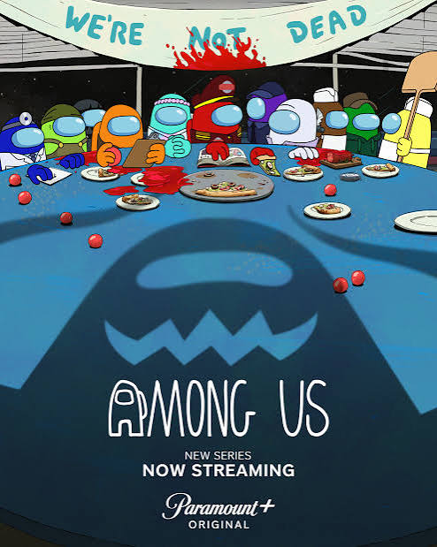

CREWMATE
SHIP SYSTEMS0 / 3
11ABOARD
CAFETERIA
ACT 1 · PIZZA PARTY
CAPTAIN RED“Crew, save the ship. Then we can save dinner.”
Fix the ship. Follow the clues. Catch the impostor.
LIGHTS ARE OUT
DRAG OR TAP THE FLOOR / WASD
THE CREW. THE CHAOS. YOUR TURN.
AMONG USPIZZA, PANIC & IMPOSTORS
Play with the show’s crew. Face Green in the finale.
YOU’RE PLAYING ASGREENUnpaid Intern
“I volunteered! Wait—what did I volunteer for?”

CHOOSE YOUR CHARACTER
PLAYING ON The show’s Skeld
Unofficial fan game · Original mystery + show-inspired finale